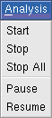
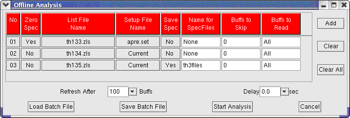

|  |
ANALYSIS |
One of the major uses of LAMPS is for analysis of list-mode files. The provision of different file formats allows one to read data from different labortories as well.
To analyse list mode files one prepares a list of files that are to be analysed (it could be just one file or upto 200 files). These files could be from different runs of the same experiment to be analysed to accumalate statistics from run to run, or they could be independent runs or any combination of these. The idea is that the analysis of several files can be started and left to run unattended. The spectra built from diffrent runs can be accumalated and saved after each file or after a combination of files in any desired manner.
Start: This brings up the following:

Click "Add". This brings up a file selector dialog box. From this selector box, double click the list mode files that are to be added and they appear line by line as shown in the example above where 3 files "th133.zls", "th134.zls" and "th135.zls" have been selected for analysis. The buttons under "Zero Spec" can be toggled to Yes/No indicating that the spectrum should be zeroed before the analysis of the file. Clicking on the button under "Setup File Name" (default is "Current") allows selecting a setup file. The last two colums provide the possibility of skipping parts of the file. In the above example, the 3 files th133.zls, th134.zls and th135.zls are to be analysed together accumalating the statistics. The setup file is called "apre.set" and the same setup file is to be used throughout. The spectrum files are to be saved after analysing all the files with the file names th3files001.z1d etc. Consider this box as a set of instructions left-to-right and line by line. The first line instructs the program to first zero all spectra, then start the analysis of the file th133.zls after loading the setup file apre.set (if no setup file is named the entry shows "Current". In this case no setup file will be loaded and whatever setup is currently in memory will be used. By naming the setup file at least for the first line we ensure that a proper setup file will be loaded. This avoids loading the setup file by clicking Setup - Read Setup before starting the batch analysis). After the analysis of this file we do not want to save the spectra, so Save Spec is "No". We dont need a name for the spectrum output files so we have "None" in the next column. We want to process the entire file so Buffs to Skip is "0" and Buffs to Read is "All". Now when we come to the second file, we dont want to zero the spectra, since we have to accumalate the statistics from the previous run, so we have "No" in the Zero Spec column. We dont have to give the setup file again. If we leave it as "Current", the setup file already loaded during the previous analysis will be retained. Again we are not saving the spectra at this stage so we have "No" and "None" in the next two columns. Finally we come to the last file. Here the difference is that we have to save the spectra at the end of the analysis. Therefore, under Save Spec, we enter "Yes" and provide a useful name for the output files.
Finally note the buttons at the bottom row:
Load Batch File: This allows a set of batch instructions previously saved to be read in.
Save Batch File: The batch instructions are saved to a file. The file name is to be provided
ending in .bat. This is a plain text file and the user can also edit it using a text
editor like gedit, emacs or vi.
Start Analysis: Starts the batch analysis. The spectra are displayed during analysis simulating an actual experiment. All the spectrum analysis functions like peak fit etc can now be done without waiting for the analysis to be completed, although the display is often updating too fast for this to be useful. For long analysis, one can leave the program unattended at this stage.
The other options in the Analysis pull down menu are "Stop" (stops analysis of the current file in the batch), "Stop All" (stops analysis of all files), "Pause" and "Resume".